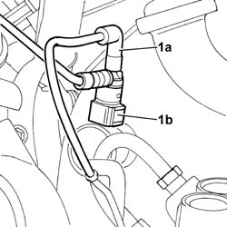

3330D20 ONE-WAY VALVE FOR BRAKE SERVO - R+R
- Path
- Procedures > 33 BRAKES > 3330 HYDRAULIC BRAKE SYSTEM > 3330D BRAKE VACUUM SYSTEM > 3330D20 ONE-WAY VALVE FOR BRAKE SERVO - R+R
- Kind
- repair procedure (removal / refitting; the operation number is the code)
- Applies to
- engines: 2.0 16V JTD, 2.2 16V JTD; all production periods
- Interactive page
- https://sloeber94.github.io/elrnDB-fUlss/en/#/179007310
Applies to: engines: 2.0 16V JTD, 2.2 16V JTD; all production periods
 Removing
Removing
 Refitting
RefittingOp. 5530B56 BATTERY DRIP TRAY COVER - R.R.
- Disconnect the negative battery terminal.
Op. 3330C30 BRAKE FLUID RESERVOIR - R + R AND WASH INSIDE
- Disconnect the rigid brake/clutch fluid reservoir pipes.
1. Disconnect the vacuum pipe (1a) and remove the single-acting valve (1b) from the brake servo.

Applies to: engines: 2.0 16V JTD, 2.2 16V JTD; all production periods
Refitting
Removing- Fit the one-way valve on the brake servo.
- Connect the vacuum pipe.
Op. 3330C30 BRAKE FLUID RESERVOIR - R + R AND WASH INSIDE
Op. 0010T67 HYDRAULIC CLUTCH SYSTEM BLEED AIR
- Remove the vehicle from the lift.
- Connect the negative battery terminal.